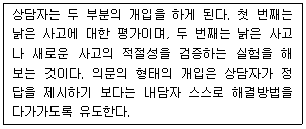
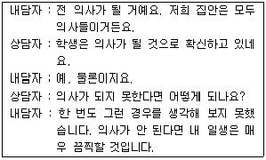
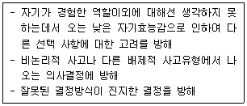
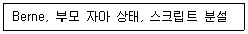
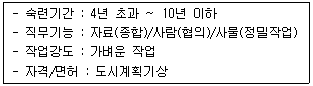
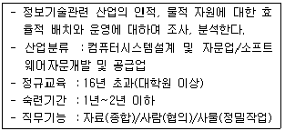
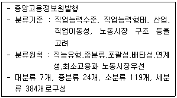
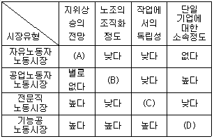

직업상담사-2급(구) (2006-03-05 기출문제)
1과목: 직업상담ㆍ심리학
1. 직업상담 장면에서 미결정자나 우유부단한 내담자에게 가장 우선되어야 할 직업상담 프로그램은?
- 미래사회 이해 프로그램
- 자신에 대한 탐구 프로그램
- 취업효능감 증진 프로그램
- 직업세계 이해 프로그램
(정답률: 알수없음)

2. 직업 상담에 있어 검사 도구에 대해 내담자가 비현실적 기대를 가지고 있을 때 상담자가 취할 수 있는 적정할 행동은?
- 즉시 검사를 한다.
- 검사 사용 목적에 대하여 내담자에게 설명한다.
- 검사종류의 선택을 독단적으로 한다.
- 심리검사는 상담관계를 방해하므로 실시하지 않는다.
(정답률: 알수없음)
3. Rogers의 내담자 중심의 접근이 개인의 지금-여기에서의 주관적인 경험을 중요시한다는 것을 보여주는 대표적인 개념은?
- 자기실현 경향성
- 현상학적인 장
- 가치의 조건
- 수용적인 존중
(정답률: 알수없음)
4. 개인의 직업선택에 미치는 요인들은 크게 내부요인과 외부요인으로 나누어 볼 수 있다. 이 중 내부요인들(internal factors)에 해당되지 않는 것은?
- 개인 정보적 요인
- 성별 등의 일반적 요인
- 개인 심리적 요인
- 개인 사회적 요인
(정답률: 알수없음)
5. 다음은 직업 상담기법 중 무엇에 대한 설명인가?

- 실제적 기법
- 심리측정 도구 사용기법
- 인지적 기법
- 논리적 기법
(정답률: 알수없음)
6. 직업상담사의 자질 요건 중 “상담업무를 수행하는데 가급적 결함이 없는 성격을 갖춘 자”이어야 하는데 이에 대한 설명 중 틀린 것은?
- 지나칠 정도의 동정심
- 순수한 이해심을 가진 신중한 태도
- 건설적인 냉철함
- 두려움이나 총격에 대한 공감적 이해력
(정답률: 알수없음)
7. 다음의 상담과정에서 필요한 상담기법은?

- 재구조화
- 합리적 논박
- 정보제공
- 직면
(정답률: 알수없음)
8. 다음 중 생애진로사정의 설명으로 틀린 것은?
- 내담자의 과거 직업에 대한 전문지식 분석
- 내담자의 과거 직업경력에 대한 정보수집
- 내담자의 가계도(genogram) 작성
- 내담자가 가진 자원과 장애물에 대한 평가
(정답률: 알수없음)
9. 왜곡된 사고체제나 신념체제를 가진 내담자에게 효과적인 상담기법은?
- 내담자 중심 상담
- 인지치료
- 정신분석
- 행동요법
(정답률: 알수없음)
10. 직업 상담에 대한 설명으로 틀린 것은?
- 직업 상담에서는 내담자의 안전이나 사회적 적은 방법으로 직업문제를 인식하는 것이므로 일반상담에서 사용되는 심리치료를 포함하고 있다.
- 직업상담은 개인의 내적·외적 문제를 다루므로 개인의 내적 문제를 다루는 심리치료보다 더 필요하다.
- 직업상담은 생애역할과 다른 생애역할과의 통합의 부적절과 불만족을 포함한 것이다.
- 직업상담은 잘못된 논리체계에 의한 인지적 명확성이 부족한 내담자에게는 일반상담을 실시토록 의뢰한다.
(정답률: 알수없음)
11. 다음 설명은 인지적 명확성의 원인과 관련하여 어떤 직업 상담과정이 필요한가?

- 고정관념이 그 원인이므로 직업상담 실시
- 경미한 정신건강이 그 원인이므로 다른 치료 후에 직업 상담을 실시
- 자신과 직업에 대한 정보결핍이 그 원인이므로 직업 상담 실시
- 직업문제에 대해 집중하는데 어려움이 있는 것이 그 원인이므로 개인상담 후 직업상담 실시
(정답률: 알수없음)
12. 상담단계의 틀을 구조화하기 위해서 다루어야 할 요소가 아닌 것은?
- 상담자의 역할과 책임
- 내담자의 성격
- 상담의 목표
- 상담시간과 장소
(정답률: 알수없음)
13. 진로상담 및 직업상담의 과정을 순서대로 잘 나열한 것은?
- 상담목표의 설정 → 관계수립 및 문제의 평가 → 문제해결을 위한 개입 → 훈습(Working Through) → 종결
- 관계수립 및 문제의 평가 → 상담목표의 설정 → 문제해결을 위한 개입 → 훈습(Working Through) → 종결
- 상담목표의 설정 → 관계수립 및 문제의 평가 → 훈습(Working Through) → 문제해결을 위한 개입 → 종결
- 관계수립 및 문제의 평가 → 훈습(Working Through) → 상담목표의 설정 → 문제해결을 위한 개입 → 종결
(정답률: 알수없음)
14. 우리나라에서 직업상담자의 주요 역할 영역이 아닌 것은?
- 대학기관
- 노동부 지방관서
- 고용안정센터
- 인력은행
(정답률: 알수없음)
15. 내담자 중심상담에서 강조되는 상담자의 특성이 아닌 것은?
- 일치성
- 무조건적 수용
- 공감적 이해
- 분석적 사고
(정답률: 알수없음)
16. 자신에 대한 탐구 프로그램 내용에 포함되지 않는 것은?
- 타인이 판단하는 자신의 모습
- 가족관계
- 자신의 능력 평가
- 과거 위인의 생애와 자신의 생애 비교
(정답률: 알수없음)
17. 집단진로상담의 설명으로 옳지 않은 것은?
- 어느 정도 책임 의식이 있는 구성원을 선발한다.
- 다양한 수준의 발달단계에 있는 구성원을 선발한다.
- 탐색, 전이, 행동의 3단계를 겪는다.
- 성별에 따라 집단에 대한 기대감, 집단경험에 차이가 있다.
(정답률: 알수없음)
18. 다음은 어떤 상담 기법과 관련이 있는가?

- 교류분석적 상담
- 정신분석적 상담
- 내담자 중심적 상담
- 특성-요인적 상담
(정답률: 알수없음)
19. 외재적 욕구는 직업적으로 구체적이지 않기 때문에 직업적 선호도와 관련이 없지만 내재적 욕구는 직업적으로 구체적이어서 직업적 선호도와 명백한 관계가 있다는 가설을 지지하는 학자는?
- Thondike & Weiss
- Katz
- Meir & Friedland
- Salomoe & Muthard
(정답률: 알수없음)
20. 다음 중 직업 상담에서 특성-요인이론의 설명으로 맞는 것은?
- 대부분의 사람들은 성격 특성 면에서 여섯 가지 유형으로 분류될 수 있다.
- 개개인은 신뢰할 만하고 타당하게 측정될 수 있는 고유한 특성의 집합이다.
- 개인은 일을 통해 개인적 욕구를 성취하도록 동기화되어 있다.
- 직업적 선택은 개인의 발달적 특성이다.
(정답률: 알수없음)
21. 에릭슨의 심리사회적 발달이론에서 청년기에 해당하는 것은?
- 근면 대 열등감 - 능력
- 자아정체 대 역할혼란 - 충성심
- 친밀감 대 고립 - 사랑
- 생식 대 정체 - 배려
(정답률: 알수없음)
22. 직장 내 성희롱이 승진이나 특혜, 직무의 유지를 위해 강제적으로 이루어질 때 일어나는 성희롱은 어떤 유형의 성희롱인가?
- 적대적 환경(hostile environment)에 의한 성희롱
- 사회문화적(socio cultural) 성희롱
- 보복적(quid pro quo) 성희롱
- 생물학적(biological) 성희롱
(정답률: 알수없음)
23. 다음 중 타당도 계수를 산출하기 어려운 타당도는?
- 예언 타당도
- 준거 관련 타당도
- 수렴 타당도
- 내용 타당도
(정답률: 알수없음)
24. 직부분석 후 직무 기술서 작성 시 주의할 점으로 잘못된 것은?
- 항상 현재형 시제를 사용해야 한다.
- 가급적수동형의 문장은 사용하지 않는다.
- 직무 현직자에게 친숙한 용어를 사용해야 한다.
- 가급적 수량을 나타내는 용어는 사용하지 않는다.
(정답률: 알수없음)
25. 다음의 진로발달의 이론 중 인지적 정보처리관점을 의미하는 것은?
- 개인에게 학습기회를 제공함으로서 개인의 처리능력을 발전시킨다.
- 개인의 삶은 외부환경요인, 개인과 신체적 속성 및 외형적 행동이 3변수 간의 상호작용이다.
- 인간의 기능은 개인의 가치에 의해 상당부분 영향을 받는다.
- 인간은 특성과 환경, 성격 등의 요인에 의해서 진로를 발전시킨다.
(정답률: 알수없음)
26. 다음 중 개인의 특성과 직업세계의 특징과의 최적의 조화(person-environment fit)를 가장 강조한 이론은?
- 수퍼의 생애주기 이론
- 홀랜드의 이론
- 베츠의 자기효능감 이론
- 사회적 인지학습이론
(정답률: 알수없음)
27. 다음 진로발달 이론가들 중에서 발달 단계별 특징 및 과제에 대하여 강조한 사람은?
- 파슨스(Parsons)
- 홀랜드(Holland)
- 크룸불츠(Krumbolta)
- 수퍼(Super)
(정답률: 알수없음)
28. 직업 상담에서 직무성향이나 직무능력을 평가하는 검사를 사용하고 해석하는 방법에 대한 설명 중 옳은 것은?
- 직무성향이나 능력을 평가할 수 있는 가장 좋은 방법은 검사이다.
- 검사점수를 알려줄 때는 이 영역에서 “당신의 점수는 75점입니다”라는 식으로 정확하게 알려준다.
- 검사를 해석할 때에는 해석한 후 내담자의 반응을 잘 살펴서 상처를 받지 않게 해야 한다.
- 내담자의 기분을 상하게 하거나 내담자의 생각과 다를 것 같은 내용은 가능한 한 말하지 않는다.
(정답률: 알수없음)
29. 다음 중 직무분석 결과 작성되는 보고서가 아닌 것은?
- 직무기술서
- 작업명세서
- 직위기술서
- 관계도 명세서
(정답률: 알수없음)
30. 다음 중 어떤 검사의 문항들이 내적으로 얼마나 일관성이 있는가를 나타내는 신뢰도는?
- 검사-재검사 신뢰도
- 동형검사 신뢰도
- 반분신뢰도
- 채점자가 신뢰도
(정답률: 알수없음)
31. 실업자의 직업전화에 대한 설명이 틀린 것은?
- 실업자는 나이가 많을수록 취업제의를 받는 비율이 감소한다.
- 조직에서는 청년기, 중년기, 정년 전 등 직업경력의 전환점에서 적절한 훈련 내지 지도조언을 실시하는 경력개발계획을 추진할 필요가 있다.
- 직업상담에서 실업자에게 생애훈련적 사고를 갖도록 조언하고 촉구하고 참여하도록 권고하여야 한다.
- 직업전환은 어려운 일이기 때문에 한 직업에 계속해서 종사해야 한다.
(정답률: 알수없음)
32. 다음 중 작업자 중심의 직무분석에 대한 설명으로 맞는 것은?
- 최종적으로 직무기술서를 작성하기 위한 직무분석방법이다.
- 과제분석이라고도 한다.
- 각 직무들에 적용될 수 있는 표준화된 분석도구를 만들기 어렵다.
- 지식, 기술, 능력, 경험 등 작업자 개인요건들로 직무를 표현한다.
(정답률: 알수없음)
33. 직업 선택에서 특성-요인 이론이 가정하고 있는 기본적인 전제가 아닌 것은?(오류 신고가 접수된 문제입니다. 반드시 정답과 해설을 확인하시기 바랍니다.)
- 인간 개개인은 신뢰할만하고 타당하게 측정될 수 있는 고용한 특성의 집합체이다.
- 각 직업은 성공적인 수행을 위해서는 직업마다 요구되는 고유한 인간의 특성을 필요로 한다.
- 직업과 관계는 가치나 흥미, 능력은 인간 발달에 따라 변화하게 된다.
- 개인이 지닌 특성과 직업이 요구하는 특성이 서로 잘 부합될수록 개인의 만족과 조직의 효율성이 증진된다.
(정답률: 알수없음)
34. 개인의 적성과 흥미 또는 성격과 직업적 요구와의 차이로 인해 내담자가 직업적응문제를 나타낼 때 이러한 문제해결을 위해 가장 바람직한 방법은?
- 스트레스 관리 방안 모형
- 직업전환
- 인간관계 개선 프로그램 제공
- 전근
(정답률: 알수없음)
35. 개인관련 스트레스 요인 중 A유형 행동이 아닌 것은?
- 책임을 피한다.
- 쉽게 화를 낸다.
- 늘 경쟁적 성취욕으로 가득 차 있다.
- 많은 일을 성취하려 한다.
(정답률: 알수없음)
36. 직무분석 자료의 특성으로 적합하지 않은 것은?
- 최신의 정보를 반영해야 한다.
- 가공하지 않은 원상태의 정보이어야 한다.
- 논리적으로 체계화 되어야 한다.
- 한 가지 목적으로만 사용되어야 한다.
(정답률: 알수없음)
37. 직업적성검사(GATB)에서 사무지각적성(Clerical Perception)을 측정하기 위한 검사는?
- 표식검사
- 계수검사
- 명칭비교검사
- 평면도 판단검사
(정답률: 알수없음)
38. 다음 중 홀랜드(Holland)가 구분한 직업분야에 속하지 않는 것은?
- 종교적(Religious)분야: 종교, 봉사, 후원적 영역
- 탐구적(lnvestigative)분야: 추상적, 논리적, 과학적 영역
- 관습적(Conventional)분야: 논리적, 체계적, 상세하고 체계지향적 영역
- 예술적(Artistic)분야: 심미적, 감수적, 비인격적 영역
(정답률: 알수없음)
39. 수퍼(Super)가 제시한 여성의 진로발달유형중 가정생활과 직장생활을 번갈아가며 시행하는 유형으로, 학교를 졸업하고 결혼 전까지 일을 하다가 결혼 후 어느 정도 쉬다가 일을 하고 자녀를 갖게 되면 또 쉬었다가 일을 하는 유형은?
- 이중진로유형
- 단절진로유형
- 불안정한 진로유형
- 충동적 진로유형
(정답률: 알수없음)
40. 100명의 학생들이 오늘 어떤 심리검사를 받고 한 달 후에 동일한 검사를 다시 받았는데 두 번의 검사에서 각 학생의 점수가 동일했다. 이 경우에 검사-재검사 신뢰도는 얼마인가?
- 0,00
- -1,00
- +0,⑤
- +1,00
(정답률: 알수없음)
2과목: 직업정보론(노동시장론 포함)
41. 다음은 한국직업사전(2003년)에 수록된 도시계획설계기술자의 일부 부가직업정보이다. 이에 대한 설명으로 맞는 것은?

- 숙련기간은 양성훈련기간도 포함한다.
- “사람”과 관련된 기능은 인간처럼 취급되는 동물은 포함하지 않는다.
- 가벼운 작업은 최고 8Kg의 물건을 들어올리고 4Kg 정도의 물건을 빈번히 들어 올리거나 운반한다.
- 자격/면허는 민간에서 부여하는 자격증도 포함한다.
(정답률: 알수없음)
42. 근로자가 산업재해보상을 받을 수 없는 경우는?
- 사업장 시설의 하자로 발생한 재해
- 업무수행을 위한 지방출장 중의 재해
- 대중교통수단을 이용하여 출근 중 발생한 재해
- 과로 스트레스에 의한 질병
(정답률: 알수없음)
43. 다음 직업정보의 종류 중 민간직업정보의 특성에 대한 설명으로 맞는 것은?
- 특정시기에 국한되지 않고 지속적으로 제공된다.
- 특정한 목적에 맞게 해당분야 및 직종을 제한적으로 선택할 수 있다.
- 무료로 제공된다.
- 다른 정보에 미치는 영향이 크며 관련성이 높다.
(정답률: 알수없음)
44. 한국표준산업분류에의 생산단위의 활동형태에 관한 설명으로 틀린 것은?
- 모생산 단위의 생산품을 포장하기 위한 캔, 상자 및 유사제품의 생산은 보조단위로 본다.
- 주된 산업 활동이란 산업 활동이 복합 형태로 이루어질 경우 생산된 재화 또는 제공된 서비스 중 부가가치 활동이 가장 큰 활동을 의미한다.
- 부차적 산업 활동은 주된 산업 활동 이외의 재화생산 및 서비스제공활동을 의미한다.
- 보조 활동에는 회계, 창고, 운송, 구매, 판매촉진, 수리업무 등이 포함된다.
(정답률: 알수없음)
45. 인간의 의사결정 모형 중 대안을 모색해서 각각의 대안을 의사결정 기준에 따라 평가하는 과정은?
- 탐색과정
- 선택과정
- 설계과정
- 구현과정
(정답률: 알수없음)
46. 경제화동인구조사에 관한 설명으로 틀린 것은?
- 작성기관은 통계청 사회통계국 사회통계과이다.
- 공익근무요원과 외국인은 조사대상에서 제외된다.
- 지방사무소 조사담당직원이 조사대상 가구를 직접 방문하여 면접 조사한다.
- 매월 15일이 포함된 1주간이 실시조사기간이다.
(정답률: 알수없음)
47. 일반적인 고용정보의 가공·분석에 관한 설명으로 틀린 것은?
- 정보의 가공 및 분석목적을 명확히 할 것
- 변화 동향에 유의할 것
- 숫자로 표현할 수 없는 정보는 삭제할 것
- 다른 통계와의 관련성 및 여러 측면을 고려할 것
(정답률: 알수없음)
48. 직업정보 수집 시 유의사항으로 옳은 것은?
- 자료의 출처와 저자, 발행연도를 반드시 명기하여야 하나 수집자는 기입하지 않아도 된다.
- 수집된 정보라 할지라도 항상 유효하지 않기 때문에 지속적인 정보의 보완이 필요하다.
- 직업정보를 수집하기 위해서는 옮겨쓰기,오려붙이기,녹음,입력,재구성하기 등이 필요하다.
- 우연히 발견한 것과 외부로부터 자료를 모아두는 것도 직업정보의 수집이다.
(정답률: 알수없음)
49. 직업선택결정모형 중 처방적 직업결정모형은?
- 타이드만과 오하라(Tideeman & O'Hara)의 모형
- 힐튼(Hilton)의 모형
- 브룸(Vroom)의 모형
- 카츠(Katz)의 모형
(정답률: 알수없음)
50. 다음 중 우리나라 고용보험의 주요사업이 아닌 것은?
- 실업부조
- 고용안정사업
- 실업급여
- 직업능력개발사업
(정답률: 알수없음)
51. 다음 중 한국표준직업분류(2000)에서 직업으로 보는 활동은?
- 주식배당 등과 같은 재산수입이 있는 경우
- 경마, 경륜 등에 의한 배당금 수입이 있는 경우
- 토지나 금융자산을 매각하여 수입이 있는 경우
- 계절적으로 행해지는 생산 활동에 의해 수입이 있는 경우
(정답률: 알수없음)
52. 한국직업사전(2003년)에 수록된 다음 직업은 무엇인가?

- 전사적 자원관리 시스템전문가
- 정보개발제공자
- 정보보호 컨설턴트
- 정보기술컨설턴트
(정답률: 알수없음)
53. 고용정보와 관련한 용어에 대한 설명으로 맞는 것은?
- 유효구인인원 ：구인신청인원 중 해당 월말 현재 알선 가능한 인원수의 합
- 구인배율 ： 신규 구직자수/신규 구인인원
- 알선률 ： (신규 구직자수/알선건수)*100
- 취업률 ： (취업건수 + 신규 구직자수)*100
(정답률: 알수없음)
54. 한국직업사전(2003년)의 직업코드의 기준은?
- 한국표준직업분류의 대분류
- 한국표준직업분류의 중분류
- 한국표준직업분류의 소분류
- 한국표준직업분류의 세분류
(정답률: 알수없음)
55. 국가기술자격 중 전문사무분야인 사회조사 분석사 1급의 응시자격은?
- 해당종목의 2급 자격취득 후 해당실무에 3년 이상 종사한 자
- 해당실무에 4년 이상 종사한 자
- 대학졸업자 등으로서 졸업 후 해당실무에 2년 이상 종사한 자
- 전문대학 졸업자 등으로서 졸업 후 해당실무에 3년 이상 종사한 자
(정답률: 알수없음)
56. 한국표준직업분류에서 직업의 분류원칙에 대한 설명으로 틀린 것은?
- 포괄적인 업무의 경우에는 상관성이 많은 항목에 분류한다.
- 다수 직업근로자의 경우에는 취업시간이 많은 직업을 택한다.
- 포괄적인 업무의 경우에는 높은 수준의 직무능력을 필요로 하는 항목에 따라서 분류한다.
- 재화의 생산 및 공급과정의 상이한 단계에 연관된 업무인 경우에는 최종 단계에 관련된 업무에 따라 분류한다.
(정답률: 알수없음)
57. 고용보험의 직업능력개발사업 중 직업능력개발훈련에 속하지 않는 것은?
- 사업주 직무훈련
- 사업주 양성훈련
- 사업주 향상훈련
- 사업주 전직훈련
(정답률: 알수없음)
58. 다음은 무엇에 관한 설명인가?

- 한국직업사전
- 한국고용직업분류
- 한국표준직업분류
- 한국표준산업분류
(정답률: 알수없음)
59. 직업안정기관에서 구인신청을 거부할 수 없는 경우는?
- 구인자가 구인조건의 명시를 거부하는 경우
- 구인신청을 fax로 하는 경우
- 근로조건이 통상의 경우보다 현저히 떨어지는 경우
- 구인신청의 내용이 법령을 위반하는 경우
(정답률: 알수없음)
60. 훈련방법에 따른 구분으로 직업능력개발훈련을 하기 위하여 설치한 훈련전용시설을 이용하거나 훈련을 실시하기에 적합한 시설에서 실시하는 훈련은?
- 양성훈련
- 현장훈련
- 통신훈련
- 집체훈련
(정답률: 알수없음)
61. 준고정적 노동비용에 해당하지 않는 것은?
- 퇴직금
- 의료보험
- 유급휴가
- 초과근무수당
(정답률: 알수없음)
62. 노동시장의 균형에 관한 설명 중 틀린 것은?
- 노동은 모두 동질적이고 또한 이동이 가능하다는 가정이 전제가 된다.
- 노동수요곡선과 공급곡선이 일치하는 E점에서 노동의 균형고용량(0L၀)과 균형임금(0W၀)이 결정된다.
- 임금이 균형임금보다 낮은 수준(0W၊)에서 결정되면 노동의 수요(W၊F)가 공급(W၊C)을 초과하여 CF만큼 노동에 대한 초과수요가 발생한다.
- 임금이 균형임금보다 낮은 수준(0W၊)에서 결정되면 임금이 상승하게 되어 기업의 노동에 대한 수요가 증가하게 된다.
(정답률: 알수없음)
63. 다음 중 보상적 임금격차를 발생시키는 요인이 아닌 것은?
- 작업환경의 쾌적성 여부
- 성별간의 소득차이
- 교육훈련 기회의 차이
- 고용의 안정성 여부
(정답률: 알수없음)
64. 다음 중 마찰적 실업의 원인으로 볼 수 있는 것은?
- 생산설비의 부족
- 노동력 절감의 기술 혁신
- 노동시장 정보의 불완전성
- 총수요가 부족하여 전체 노동력을 고용할 수 없는 경우
(정답률: 알수없음)
65. 케인즈(Keynes)의 실업이론에 관한 설명으로 틀린 것은?
- 노동의 공급은 실질임금의 함수이며, 노동에 대한 수요는 명목임금의 함수이다.
- 노동자들은 화폐환상을 갖고 있어 명목임금의 하락에 저항하므로 명목임금은 하방경직성을 갖는다.
- 복원 오류로 보기가 없습니다.
- 실업의 해소방안으로 재정투융자의 확대, 통화량의 증대 등을 주장하였다.
(정답률: 알수없음)
66. 다음 중 노동공급의 탄력성 공식으로 맞는 것은?
- 노동공급의 탄력성 = (-) 노동공급량의 변화량(%)/임금의 변화량(%)
- 노동공급의 탄력성 = (-) 임금의 변화량(%)/노동공급량의 변화량(%)
- 노동공급의 탄력성 = 임금의 변화량(%)/노동공급량의 변화량(%)
- 노동공급의 탄력성 = 노동공급량의 변화량(%)/임금의 변화량(%)
(정답률: 알수없음)
67. 여성이 특정 직종에 집중되면서 여성노동시장의 경쟁이 격화됨으로써 여성의 임금수준이 저하되는 현상은?
- 위협효과
- 파급효과
- 대체효과
- 혼잡효과
(정답률: 알수없음)
68. 다음 중 노동시장의 유연화(flexible labor market)와 관련이 있는 제도는?
- 변형근로시간제
- 주 5일 근무제
- 연공서열제
- 생산성 임금제
(정답률: 알수없음)
69. 현재 서구를 비롯하여 전 세계적으로 지배적인 노동조합의 조직유형으로 맞는 것은?
- 기업별 노동조합
- 산업별 노동조합
- 일반 노동조합
- 직업별 노동조합
(정답률: 알수없음)
70. 인적자본이론에 의하면 소득의 불평등을 완화하기 위하여 저소득층에 대한 교육훈련비가 지원되어야 한다. 다음 중 이러한 정책이 효과를 보지 못할 가능성이 큰 경우는?
- 학력별 임금격차가 클 경우
- 특정집단에 대한 채용차별이 심할 경우
- 교육훈련이 생산성 향상에 크게 기여할 경우
- 자본시장이 불완전하여 소득제약이 교육투자의 큰 애로요인으로 작용할 경우
(정답률: 알수없음)
71. 다음 중 여성의 경제활동참가 결정 요인으로 맞는 것은?
- 여타 조건이 일정불변일 때, 시간의 경과에 따라 시장임금(실질임금의 의미)이 증가할수록 여성의 경제활동 참가율은 높아진다.
- 여타 조건이 일정불변일 때, 보상요구임금이 낮을수록 경제활동참가율은 낮아진다.
- 가계생산의 기술이 향상될수록 여성의 경제활동참가율은 낮아진다.
- 파트타임 고용시장의 미발달은 30대 기혼여성의 경제활동참가율을 높인다.
(정답률: 알수없음)
72. 노동시장의 유형과 특징에 관한 다음 설명 중 빈칸에 들어갈 것으로 옳게 짝지어진 것은?

- (A) 높다 (B) 없다 (C) 낮다 (D) 낮다
- (A) 낮다 (B) 없다 (C) 낮다 (D) 없다
- (A) 없다 (B) 높다 (C) 높다 (D) 낮다
- (A) 낮다 (B) 낮다 (C) 낮다 (D) 없다
(정답률: 알수없음)
73. 다음 중 기업의 존재를 설명하기 위한 이론으로 옳지 않은 것은?
- 거래비용의 최소화
- 팀에 의한 생산의 장점
- 규모의 경제
- 불확실성 이론
(정답률: 알수없음)
74. 다음 중 노동조합이 노동공급을 제한함으로서 발생할 수 있는 효과는?
- 노동조합이 조직화된 노동시장의 임금이 하락할 것이다.
- 노동조합이 조직화되지 않은 노동시장의 공급곡선이 상방 이동할 것이다.
- 노동조합이 조직화된 노동시장의 노동수요곡선이 상방 이동할 것이다.
- 노동조합이 조직화되지 않은 노동시장의 임금이 하락할 것이다.
(정답률: 알수없음)
75. 독과점시장하에서의 기업의 노동수요곡선은?
- 노동의 한계수입생산물곡선
- 노동의 한계생산물가치곡선
- 노동의 한계생산물곡선
- 노동의 평균생산물곡선
(정답률: 알수없음)
76. 다음 중 성과급 제도를 채택하기 어려운 경우는?
- 근로자의 노력과 생산량과의 관계가 명확한 경우
- 생산원가 중에서 노동비용에 대한 통제가 필요하지 않은 경우
- 생산량의 질(quality)이 일정한 경우
- 생산량이 객관적으로 측정 가능한 경우
(정답률: 알수없음)
77. 개인의 후방굴절형 노동공급곡선에 설명으로 맞는 것은?
- 임금이 상승함에 따라 노동시간을 증가시키려고 한다.
- 소득-여가간의 선호체계분석에서 소득효과가 대체효과를 압도한 결과이다.
- 소득-여가간의 선호체계분석에서 대체효과가 소득효과를 압도한 결과이다.
- 임금이 하락함에 따라 노동시간을 줄이려는 의지를 강력하게 표현하고 있다.
(정답률: 알수없음)
78. 다음 중 노동법상 연장근로나 연월차 수당의 근거가 되는 기준임금은?
- 통상임금
- 평균임금
- 명목임금
- 실질임금
(정답률: 알수없음)
79. 노동시장에서 차별을 설명하는 이론이 아닌 것은?
- 통계적 차별이론
- 노동자 편견이론
- 상이한 한계생산이론
- 소비자 편견이론
(정답률: 알수없음)
80. 다음 중 장기노동수요에 대한 설명이 아닌 것은?
- 단기에서 보다 장기에서 임금률이 높으므로 기업에서의 노동수요량은 더욱 하락한다.
- 노동의 수요가 단기보다 장기에서 더욱 탄력적이다.
- 장기노동수요는 단기노동수요의 수평적 합니다.
- 장기노동수요는 노동 이외의 다른 생산요소를 함께 변화시켜 가면서 고용량을 조정한다.
(정답률: 알수없음)
3과목: 노동관계법규
81. 다음은 근로기준법의 적용관계에 대한 설명이다. 틀린 것은?
- 근로기준법상의 근로자라 함은 직업의 종류를 불문하고 임금·급료 기타 이에 준하는 수입에 의하여 생활하는 자를 말한다.
- 근로기준법은 원칙적으로 상시5인 이상의 근로자를 사용하는 모든 사업 또는 사업장에 적용된다.
- 동거의 친족만을 사용하는 사업 또는 사업장에는 근로기준법이 적용되지 않는다.
- 근로기준법상의 사용자라 함은 사업주 또는 사업경영담당자 기타 근로자에 관한 사항에 대하여 사업주를 위하여 행위 하는 자를 말한다.
(정답률: 알수없음)
82. 고령자의 정년 연장에 관한 내용으로 옳지 않은 것은?
- 사업주가 근로자의 정년을 정하는 경우에는 그 정년이 60세 이상이 되도록 노력하여야 한다.
- 노동부장관은 정년을 현저히 낮게 정한 사업주에 대하여 정년연장에 관한 계획을 작성하여 제출할 것을 요청할 수 있다.
- 노동부장관은 사업주가 제출한 계획이 적절하지 아니하다고 판단하더라도 그 계획의 변경으로 권고할 수는 없다.
- 노동부장관은 정년연장에 따른 사업체의 인사 및 임금 등에 대하여 상담·자문 기타 필요한 협조와 지원을 하여야 한다.
(정답률: 알수없음)
83. 고용보험법상 실업급여에 속하지 않는 것은?
- 구직급여
- 조기재취업수당
- 정리해고수당
- 이주비
(정답률: 알수없음)
84. 사용자가 취업규칙을 근로자에게 불이익하게 변경하려고 할 때 필요한 요건은? ( 단, 당해 사업 또는 사업장에는 근로자의 과반수로 조직된 노동조합이 없다.)
- 근로자대표와의 협의
- 근로자 과반수와의 협의
- 근로자대표와의 동의
- 근로자 과반수의 동의
(정답률: 알수없음)
85. 근로기준법상 균등처우에 관한 기술 중에서 타당하지 아니한 것은?
- 석가탄신일에 불교신자들에게만 특별상여금을 주는 것은 균등처우에 위배되는 것이다.
- 근로기준법 제5조에 명문으로 규정되지 아니한 정치신념이나 사상에 따른 차별대우는 균등처우원칙에 위배되는 것이 아니다
- 채용의 경우에는 균등처우의 원칙이 적용되지 아니한다는 것이 일반적인 견해이다.
- 직종이나 업무의 성질에 따라 근로조건을 달리하는 것은 균등처우원칙에 위배된 것이 아니다.
(정답률: 알수없음)
86. 다음 중 직업능력개발훈련비용의 지원 대상 훈련이 아닌 것은?
- 피보험자가 아닌 자로서 당해 사업주에게 고용된 자를 대상으로 실시하는 직업능력개발훈련
- 당해 사업에서 채용하고자 하는 자를 대상으로 실시하는 직업능력개발훈련
- 직업안정기관에 구직 등록된 자를 대상으로 실시하는 직업능력개발훈련
- 당해 사업에 고용된 피보험자에게 연·월차유급휴가를 주어 실시하는 직업능력개발훈련
(정답률: 알수없음)
87. 고용정책기본법의 기본원칙으로 옳지 않은 것은?
- 근로자의 근로의 권리 존중
- 근로자의 직업선택의 자유 존중
- 사업주의 고용관리에 관한 자주성 존중
- 고용안정을 위한 국가의 주도적 역할
(정답률: 알수없음)
88. 직업능력개발훈련의 훈련목적에 따른 구분으로 옳은 것은?
- 기준훈련, 기준 외 훈련, 인정훈련
- 지정훈련, 인정훈련, 승인훈련
- 양성훈련, 향상훈련, 전직훈련
- 집체훈련, 현장훈련, 통신훈련
(정답률: 알수없음)
89. 고령자고용촉진법상 기준고용율이라 함은 사업장에서 상시 사용하는 근로자를 기준으로 하여 사업주가 고령자의 고용촉진을 위하여 고용하여야 할 고령자의 비율을 말한다. 다음 중 제조업에서의 고령자 기준고용율은?
- 당해 사업장 상시 근로자 수의 100분의 2
- 당해 사업장 상시 근로자 수의 100분의 3
- 당해 사업장 상시 근로자 수의 100분의 5
- 당해 사업장 상시 근로자 수의 100분의 10
(정답률: 알수없음)
90. 직업안정기관이 행하는 직업지도의 내용 중 틀린 것은?
- 새로 취직하려고 하는 자, 장애인에 대하여는 직업지도를 해야 한다.
- 장애인에 대한 직업지도는 특별한 지식과 기능을 가진 자가 상담해야 한다.
- 직업지도를 받은 자가 취직한 후에는 직업지도를 할 수 없다.
- 직업적성검사, 직업선호도검사를 실시할 수 있다.
(정답률: 알수없음)
91. 남녀고용평등법상 고용에 있어서 남녀의 평등한 기회 및 대우와 관련한 설명 중 틀린 것은?
- 사업주는 근로자의 모집 및 채용에 있어서 여성에게 남성과 평등한 기회를 주어야 한다.
- 동일가치노동의 기준은 직무수행에서 요구되는 기술, 노력, 책임, 및 작업조건 등으로 하고, 사업주가 그 기준을 정함에 있어 고충처리기관의 근로자를 대표하는 자의 동의를 얻어야 한다.
- 사업주는 임금 외에 근로자의 생활을 보조하기 위한 금품의 지급에 있어서 여성인 것을 이유로 남성과 차별대우를 하여서는 아니 된다.
- 사업주는 근로여성의 혼인·임신 또는 출산을 퇴직사유로 예정하는 근로계약을 체결하여서는 아니 된다.
(정답률: 알수없음)
92. 헌법상 기본권과 개별적 근로관계와의 관계 중 가장 거리가 먼 것은?
- 헌법 제10조 인간의 존엄성 및 행복추구권
- 헌법 제11조 1항 법 앞의 평등
- 헌법 제15조 직업선택의 자유
- 헌법 제21조 1항 결사의 자유
(정답률: 알수없음)
93. 다음 남녀고용평등법의 설명 중 옳지 않은 것은?
- 근로여성에 대한 모성보호는 차별로 보지 않는다.
- 남녀고용평등법은 상시 10인 이상의 근로자를 사용하는 사업장에 적용 한다
- 지방노동행정기관에 고용평등위원회를 둔다.
- 고충처리기관을 설치하여야 할 사업주는 상시 30인 이상의 근로자를 사용하는 사업의 사업주이다.
(정답률: 알수없음)
94. 다음 중 고용정책 및 노동시장정책에 관한 법률이 아닌 것은?
- 근로자창안법
- 고용보험법
- 직업안정법
- 고령자고용촉진법
(정답률: 알수없음)
95. 노동법에 대한 설명으로 부적당한 것은?
- 근로자의 인간다운 생활보장
- 근대시민법원리의 부정
- 노사대등실현
- 자본주의체제의 유지·발전
(정답률: 알수없음)
96. 직업능력개발훈련법인의 설립허가의 요건에 해당하지 않는 것은?
- 직업능력개발 사업을 주된 목적으로 할 것
- 출연재산이 2억 원 이상일 것
- 3인 이상의 이사와 1인 이상의 감사를 둘 것
- 다른 훈련법인과 동일한 명칭이 아닐 것
(정답률: 알수없음)
97. 다음 중 근로자직업능력개발법상 근로자 직업능력개발훈련이 특히 중요시되어야 할 대상이라고 보기 어려운 것은?
- 제조업에서 사무직으로 종사하는 근로자
- 일용근로자·단시간근로자·기간의 정함이 있는 근로계약을 체결한 근로자
- 국민기초생활보장법에 의한 수급권자
- 파견근로자보호등에 관할법률에 의한 파견근로자
(정답률: 알수없음)
98. 다음은 직업소개의 원칙 및 유료직업소개사업자의 준수사항을 설명한 것이다. 틀린 것은?
- 구직자에게 업무내용, 임금, 근로시간 등을 상세히 설명할 것
- 구인자에 비해 상대적으로 약자인 구직자를 특별히 배려할 것
- 요금은 원칙적으로 구직자의 근로계약이 체결된 후에 받을 것
- 광고 시 직업소개소의 명칭, 전화번호, 위치 및 등록번호를 기재할 것
(정답률: 알수없음)
99. 노동부장관이 근로자의 원활한 이동 및 고용을 촉진하기 위하여 설치·운영하는 고용촉진시설이 아닌 것은?
- 이동근로자를 위한 숙박·급식시설
- 근로자를 위한 교양·체육 또는 오락시설 등
- 여성근로자의 고용촉진을 위한 시설
- 근로자의 취직·고용문제 등에 대한 상담을 위한 유료직업소개 시설
(정답률: 알수없음)
100. 직업지도의 내용으로 옳지 않은 것은?
- 직업소개
- 직업적성검사
- 직업상담
- 직업정보제공
(정답률: 알수없음)